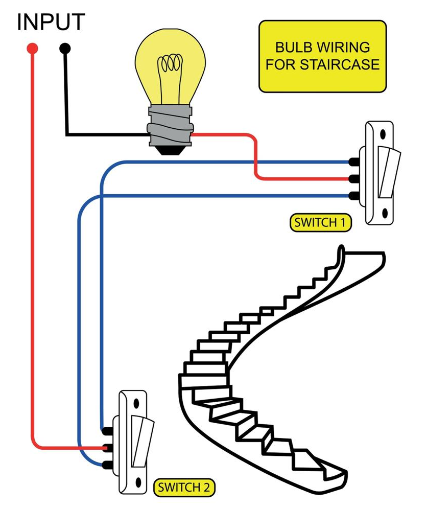

🔵 El portero del circuito
🚪 El portero que decide quién pasa
Imagina un edificio con un portero en la entrada. Cuando alguien llega, el portero puede abrir la puerta y dejar pasar a la persona, o cerrarla y negarle la entrada. No importa cuánta gente quiera entrar: si la puerta está cerrada, nadie pasa.
Un interruptor es exactamente eso: un portero para los electrones. No produce energía, no la transforma, no la almacena. Solo decide si la corriente puede pasar o no.
💡 Idea clave: el interruptor es el elemento de control del circuito. Todo lo demás (pila, cables, resistencias, LEDs) está diseñado para que funcione; el interruptor es el que decide cuándo funciona.
🔄 Tres analogías para el mismo concepto
El interruptor se puede entender a través de varias analogías cotidianas. Cada una destaca un aspecto distinto:
🚪 La puerta de una casa
La puerta cerrada deja pasar a las personas; la puerta abierta las bloquea (si suponemos que solo queremos dejar pasar a quien autorizamos). En electrónica, "circuito cerrado" = paso permitido, "circuito abierto" = paso bloqueado.
🎫 El torniquete del metro
El torniquete del metro solo gira en una dirección, y solo cuando pagas el pasaje. Si no pagas, no gira y no pasas. El interruptor es parecido: solo deja pasar la corriente cuando está en la posición correcta.
🚰 La llave de paso de una tubería
La llave de paso del agua se puede abrir o cerrar. Cuando está cerrada, el agua no pasa; cuando está abierta, el agua fluye. El interruptor cumple esa misma función, pero con electrones.
💡 Lo que tienen en común: en las tres analogías hay un elemento que decide si el flujo continúa o se detiene. Ese es el papel del interruptor.
🎯 Normalmente Abierto y Normalmente Cerrado
Los interruptores se clasifican en dos grandes familias según su estado de reposo. Pero antes de definirlas, hay que aclarar qué significa "reposo":
📌 Estado de reposo: es el estado del interruptor cuando nadie lo está tocando. Es su estado natural, sin accionar.
🟢 Normalmente Abierto (NO)
En reposo, el circuito está abierto (apagado). Solo cuando alguien acciona el interruptor, el circuito se cierra y la corriente pasa.
Ejemplo: el timbre de una puerta. En reposo nadie presiona; cuando alguien presiona, suena.
🔴 Normalmente Cerrado (NC)
En reposo, el circuito está cerrado (encendido). Solo cuando alguien acciona el interruptor, el circuito se abre y la corriente se detiene.
Ejemplo: la luz de la nevera. En reposo (puerta abierta), la luz está encendida. Cuando cierras la puerta, el interruptor se acciona y la luz se apaga.
| Tipo | En reposo | Al accionar | Ejemplo |
|---|---|---|---|
| NO | Abierto (apagado) | Se cierra (enciende) | Timbre de puerta |
| NC | Cerrado (encendido) | Se abre (apaga) | Luz de la nevera |
🛗 El reto de la escalera
Aquí tienes un desafío clásico de la electricidad: en una casa de dos pisos, quieres poder prender y apagar la luz de la escalera desde ambos pisos, sin tener que bajar o subir para hacerlo.
¿Cómo se resuelve? Con un tipo especial de interruptor llamado conmutador (o interruptor de tres vías). Dos conmutadores, uno arriba y uno abajo, se conectan con dos cables "viajeros". Al accionar cualquiera de los dos, el estado de la luz cambia.

🧠 ¿Cómo funciona?
- Cuando los dos conmutadores están en la misma posición, el circuito está cerrado y la luz enciende.
- Cuando los dos conmutadores están en posiciones distintas, el circuito está abierto y la luz se apaga.
- Al accionar cualquier conmutador, cambia su posición. Eso invierte el estado de la luz: si estaba encendida, se apaga; si estaba apagada, se enciende.
💡 Dato curioso: este mismo principio se usa en los semáforos de las intersecciones y en los sistemas de alarma. La idea de que "un cambio en cualquier punto cambia todo el sistema" es la base de la lógica digital.
💧 Las válvulas del cuerpo humano
El cuerpo humano también tiene interruptores. Se llaman válvulas, y su función es dejar pasar un flujo en una sola dirección, o bloquearlo por completo.
Algunos ejemplos:
- Válvulas del corazón: se abren y se cierran miles de veces al día para que la sangre fluya en la dirección correcta.
- Esfínteres: controlan el paso de alimentos en el sistema digestivo.
- Válvulas de las venas: evitan que la sangre se devuelva hacia los pies cuando estás de pie.
Los interruptores eléctricos y las válvulas del cuerpo tienen mucho en común: ambos son elementos de control que deciden cuándo el flujo pasa y cuándo no.
🔗 Lo que tienen en común: en la naturaleza y en la ingeniería, el control del flujo es esencial para que los sistemas funcionen. Sin control, el flujo sería caótico o inútil.
🔬 Taller: Comparando interruptores
Vas a comparar el comportamiento de dos tipos de interruptores: un pulsador normalmente abierto (NO) y un pulsador normalmente cerrado (NC). Verás en la práctica cómo cambia el estado del LED en cada caso.
💡 Dos formas de hacer este taller: puedes hacerlo en el aula (con el kit del colegio) o llevarlo a casa si tienes acceso a los materiales.
🧰 Materiales
- Un LED.
- Una resistencia de 330 Ω.
- Una pila de 9 V o una fuente de 5 V.
- Un pulsador normalmente abierto (NO).
- Un pulsador normalmente cerrado (NC), si lo tienes.
- Cables caimán.
- Tu cuaderno de bitácora.
🛠️ Procedimiento
- Monta el circuito con el pulsador NO. Conecta: pila → resistencia → LED → pulsador NO → pila.
- Observa. ¿El LED está encendido o apagado cuando no presionas nada?
- Presiona el pulsador. ¿Qué pasa con el LED? ¿Qué pasa cuando lo sueltas?
- Monta el mismo circuito con el pulsador NC (si lo tienes). ¿En qué se diferencia?
-
Registra los resultados en la tabla de tu bitácora:
Tipo de pulsador Sin presionar Presionado NO (Normalmente Abierto) NC (Normalmente Cerrado)
📝 Mi nota sobre el taller
Cuando termines, escribe una nota breve al final de tu hoja de registro. No es una tarea, es una reflexión. Puedes escribir sobre:
- ¿Con quién hiciste el taller?
- ¿Qué diferencia encontraste entre el pulsador NO y el NC?
- ¿Cuál de los dos tipos crees que es más común? ¿Por qué?
- ¿Qué aplicación práctica le darías a cada uno?
❓ Pregunta guía
Si tuvieras que diseñar una alarma que suene cuando alguien abra una puerta, ¿usarías un pulsador NO o uno NC? ¿Por qué?
⚠️ Seguridad: trabaja siempre con 3 V, 5 V o 9 V. Nunca uses voltajes de pared (110 V o 220 V).
📜 El interruptor de la nevera que salvó alimentos
En 1913, una empresa estadounidense llamada Frigidaire comenzó a producir los primeros refrigeradores eléctricos domésticos. Estos aparatos tenían un problema: no había forma de saber si la luz interior estaba encendida o apagada, y la gente abría la puerta constantemente para ver.
El problema se resolvió con un interruptor normalmente cerrado (NC) conectado a la puerta. En reposo (cuando la puerta está abierta), el circuito está cerrado y la luz está encendida. Cuando cierras la puerta, la puerta presiona el interruptor, el circuito se abre y la luz se apaga.
Al principio, estos interruptores eran mecánicos y se desgastaban con el uso. Un ingeniero llamado Alfred Mellowes (1884–1962), fundador de Frigidaire, diseñó un interruptor más resistente que podía soportar miles de accionamientos sin fallar. Ese tipo de interruptor se convirtió en el estándar de la industria.
🌍 El legado: la lógica NC en la vida diaria
La lógica del interruptor NC se usa hoy en miles de aparatos:
- La puerta del microondas: si la puerta está abierta, el magnetrón no funciona (por seguridad). El interruptor NC garantiza que el aparato no emita microondas con la puerta abierta.
- El sensor del cinturón de seguridad: cuando el cinturón no está puesto, el circuito está cerrado y se activa la alarma. Cuando lo pones, el circuito se abre y la alarma se detiene.
- La puerta de un ascensor: mientras esté abierta, el ascensor no se mueve. El interruptor NC bloquea el movimiento.
Es un principio de diseño muy común: si la condición de seguridad no se cumple, el sistema no funciona.
La lección: a veces "fallar en cerrado" es más seguro que "fallar en abierto". La lógica NC nos permite diseñar sistemas que se detienen cuando algo no está bien.
Fuentes: archivos históricos de Frigidaire y biografías de la ingeniería de electrodomésticos del siglo XX.🗺️ Repaso visual

El portero del circuito
Dale play y en 6 minutos descubrirás:
- 🚪 El portero: por qué el interruptor solo decide, no genera.
- 🔄 Tres analogías: la puerta, el torniquete y la llave de paso.
- 🎯 NO y NC: cuál es el estado de reposo y por qué importa.
- 🛗 La escalera: cómo dos interruptores controlan una misma luz.
- 💧 Las válvulas del cuerpo: el control del flujo en la naturaleza.
💡 Escúchenlo en familia y comenten qué interruptores usan sin darse cuenta.